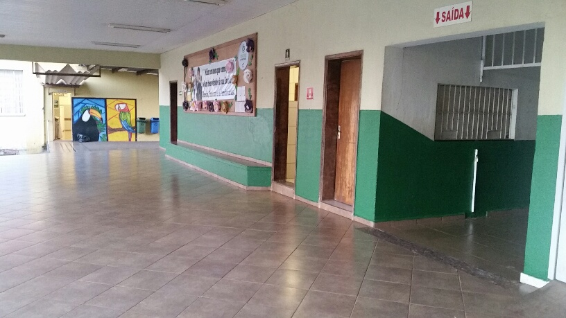
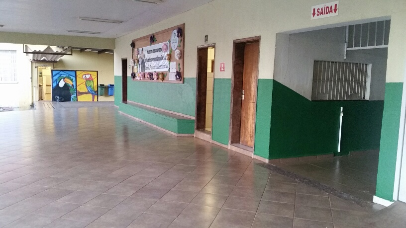

O Colégio Estadual Brasílio de Araújo foi inaugurado em 1950. O nome é uma homenagem póstuma ao pioneiro e fazendeiro da cidade de Bela Vista do Paraíso, o Sr. Brasílio, que fez a doação de um terreno, em 1948, para a construção do Grupo Escolar da cidade.

 

Em 1981, o Grupo Escolar Brasílio de Araújo se tornou Escola Estadual e, em 1993, passou a ser chamado pelo nome atual.